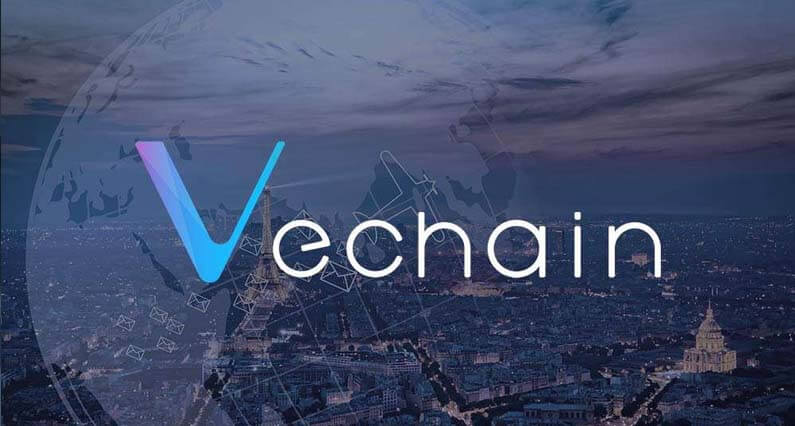

Mi az a VeChain? Útmutató kezdőknek
VeChain(hamarosan VeChain Thor), egy blokklánc mint szolgáltatás rendszer. Vechain alapítvány fejleszti amely egy Szingapúrban honos non profit szervezet 2017-ben kezdte pályafutását. Eredetileg ellátásilánc-menedzsment volt a fókuszpontjuk blokklánchoz kötött Rádiófrekvenciás azonosító chip segítségével. VeChain kinőtte magát egy általános megosztott alkalmazássá amelynek célpontja a nagy vállalatok, és már olyan iparágakban dolgozik mint a luxus termékek vagy gyógyszeripar.
VeChain Ethereum leágazásaként kezdte pályafutást, ami azt jelenti, hogy a fejlesztők akik ismerik Solidity-t az Ethereum programozási nyelvét azok, képesek VeChain-t is használni. VeChain alapítványnak több mint 40 programozója dolgozik azon, hogy VeChain legyen a 'való világ Ethereum-ja'.
Mi az a VeChain (VEN)?
VeChain egy blokklánc kompatibilis platform amelynek célja, hogy fokozza az ellátásilánc-menedzsment folyamatát. A szabotázsbiztos és megosztott főkönyv technológiák használatával, VeChain lehetővé teszi a kiskereskedők és fogyasztók számára, hogy megállapítsák egy-egy árú minőségét és hitelességét. A termék anyagaitól kezdve a szerviz előzményekig és a pótalkatrészek cseréjéig minden egyes információ a termékről feljegyezhető és ellenőrizhető.
VeChain működése
VeChain elsősorban ellátásilánc-menedzsmentel foglalkozott azonban nemrég bejelentette, hogy Dapp platformmá fejlődik.
Ellátásilánc bizalom
VeChain a blokklánc technológiát és a saját gyártású okos chip-et használja, hogy az árukat nyomon kövesse. Az okos chip beépíthető különböző IoT (Internet of Things) eszközökbe mint NFC chip-ek, Rádiófrekvenciás azonosító chip-ek és QR kódokba.
Habár ez nem a legizgalmasabb technológia, fontos szerepet játszik a termékminőség biztosításában az iparágakban. Például a luxus termékeknél.
A luxuscikkek iparága sok hamis termékkel küzd. Egy Louis Vuitton táska többször is gazdát cserél a gyártás és forgalmazás során, ilyenkor bíznod kell abban, hogy az előtted lévő személy hiteles árut ad át neked.
VeChain, mint bármely más blokklánc, szükségtelenné teszi a bizalmat. A folyamat bármely lépése közben az okos chip leolvasásával garantálható, hogy azt kapod amit rendeltél. Mivel a blokklánc egy megváltozhatatlan főkönyv, megbízhatsz a kapott információban
Ellátásilánc logisztika
A hamisítás védelmen kívül, VeChain javítja a logisztikai rendszert is egy egyszerűsített termék nyomon követéssel. A logisztika komplex és gyakran több különálló rendszert is tartalmaz, amelyek különböznek a vállalkozások között. Ezért a termékek nyomon követése sok fejfájással jár. Ez különösen igaz, ha az adatokat manuálisan kell feljegyezni.
VeChain használatával az okos chip leolvasásával a termék minden adata hozzáférhető. Ez olyan információkkal látja el a cégeket ami mindig naprakész és pontos minden termék esetében.
IoT eszközökkel használva, VeChain segíthet a minőség ellenőrzéssel is. Ez különösen hasznos az élelmiszer- és mezőgazdasági iparban ahol egy hőmérséklet változás egy egész szállítmányt károsíthat.
VeChain Alapítvány
Az alapítvány felelős a hálózat felépítéséért és technológiai fejlesztéséért. Az alapítványnak ugyancsak fontos szerepe van az üzleti fejlődésben. Az alapítvány ösztönzi és támogatja a partneri kapcsolatokat vállalatokkal amelyek érdekeltek lehetnek a blokklánc technológia használatában.
Sunny Lu vezeti a csapatot mint vezérigazgató. Sunny Lu több luxus márka cégnél is dolgozott, mint például Louis Vuitton China.
Legjelentősebb partneri kapcsolataik között ott van PwC és DNV GL. DNV GL egy 20 milliárd dollárt érő vállalat amely olaj, gáz, erőmű és megújuló energiával foglalkozó vállalatoknak nyújt szolgáltatásokat. Emellett még a Kínai kormánnyal is kapcsolatban áll, amely mindenképpen jó előjel egy kemény szabályozásokkal rendelkező országban.
Márkanév váltás
A projekt hamarosan egy márkanév váltáson fog átesni és VeChain Thor néven fog futni 2018. február 26-tól. Ez azt jelenti, hogy a meglévő VEN tokenek VET tokenek lesznek, és THOR tokenek, amelyek NEO GAS tokenhez hasonló módon fog működni. Tehát VET token birtoklásáért THOR tokeneket kapunk. Egészen pontosan 0.00042 THOR jár egy VET tokenért naponta. Továbbá Proof of Authority megegyezési mechanizmust vezetnek be.
VeChain vásárlás és tárolás
Legegyszerűbb módja ha először Bitcoin-t vagy Ethereum-ot vásárolsz Coinbase vagy BitPanda-án. Ezután többek között Binance segítségével cserélheted Bitcoin-t VEN-re. Bitcoin vagy Ethereum beszerzése után Binance és Bitfinex oldalon részletes útmutatót találsz kriptopénz vásárlással kapcsolatban.
Záró gondolatok
Kétség sincs afelől, hogy blokklánc technológia fontos innováció a ellátásilánc-menedzsmenthez. Az egyre növekvő üzleti kapcsolatok és technológiai fejlesztésekkel VeChain nagyszerű pozícióban van, hogy forradalmi újítást hozzon az iparba.


2018. Február 16.